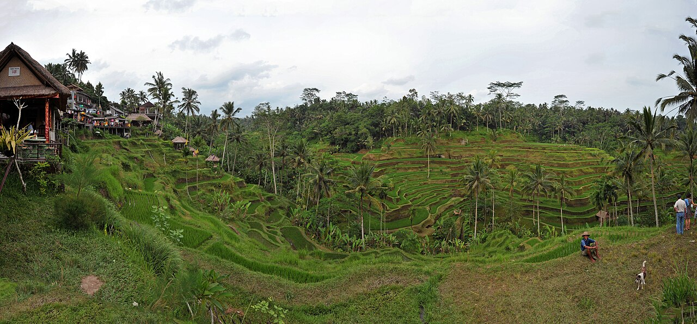
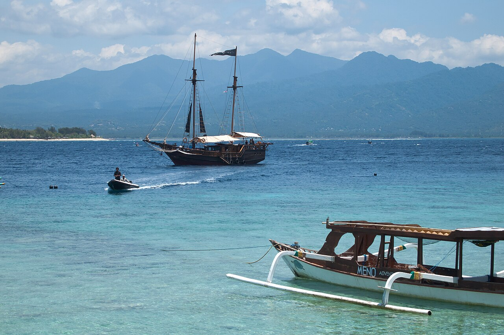

-

hero-bromo.jpg
Mount Bromo Sunrise Right
Karya HyperAnd. Lisensi CC BY-SA 4.0. Sumber di Wikimedia Commons.
-

dest-borobudur.jpg
Borobudur Sunrise 2012-01-05
Karya Justine Hong. Lisensi CC BY 2.0. Sumber di Wikimedia Commons.
-

dest-raja-ampat.jpg
Piaynemo Island, Raja Ampat, West Papua, Indonesia
Karya Irma Ade. Lisensi CC BY-SA 4.0. Sumber di Wikimedia Commons.
-

dest-tanah-lot.jpg
Tanah-Lot Bali Indonesia Pura-Tanah-Lot-01
Karya CEphoto, Uwe Aranas. Lisensi CC BY-SA 3.0. Sumber di Wikimedia Commons.
-

dest-komodo.jpg
Komodo dragon, Varanus komodoensis, Komodo Island, Indonesia
Karya Jakub Hałun. Lisensi CC BY 4.0. Sumber di Wikimedia Commons.
-

dest-ubud.jpg
1 Tegalalang rice terrace ubud bali
Karya chensiyuan. Lisensi CC BY-SA 4.0. Sumber di Wikimedia Commons.
-

dest-gili.jpg
Lombok Island and Mount Rinjani from Gili Meno Island, Indonesia
Karya Vyacheslav Argenberg. Lisensi CC BY 4.0. Sumber di Wikimedia Commons.
-

gal-prambanan.jpg
Yogyakarta Indonesia Prambanan-temple-complex-24
Karya CEphoto, Uwe Aranas. Lisensi CC BY-SA 3.0. Sumber di Wikimedia Commons.
-

gal-padar.jpg
Padar Island 2017
Karya Kelly Marvella. Lisensi CC BY-SA 4.0. Sumber di Wikimedia Commons.
-

gal-bromo.jpg
Gunung Bromo sunrise - Indonesia
Karya Thomas Fuhrmann. Lisensi CC BY-SA 4.0. Sumber di Wikimedia Commons.
-

gal-ubud-rice.jpg
Rice terraces, Ubud, Bali
Karya Vyacheslav Argenberg. Lisensi CC BY 4.0. Sumber di Wikimedia Commons.
-

gal-gili-boats.jpg
Clouds over Lombok Strait, Boats, Gili Islands, West Nusa Tenggara, Indonesia
Karya Vyacheslav Argenberg. Lisensi CC BY 4.0. Sumber di Wikimedia Commons.
Tipografi
Plus Jakarta Sans, dirancang oleh Tokotype, dipakai di bawah SIL Open Font License 1.1.
Berkas font disimpan sendiri di folder assets/fonts.
Ikon dan logo pada halaman ini digambar khusus sebagai SVG di dalam berkas sumber, bukan berasal dari pustaka ikon pihak ketiga.